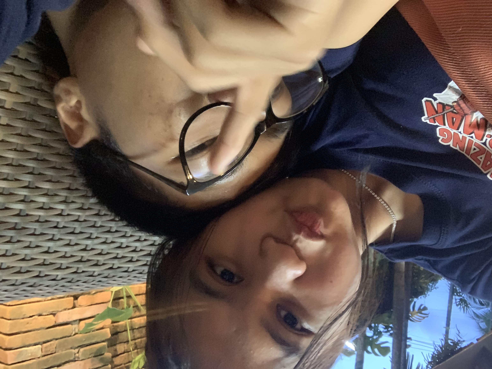
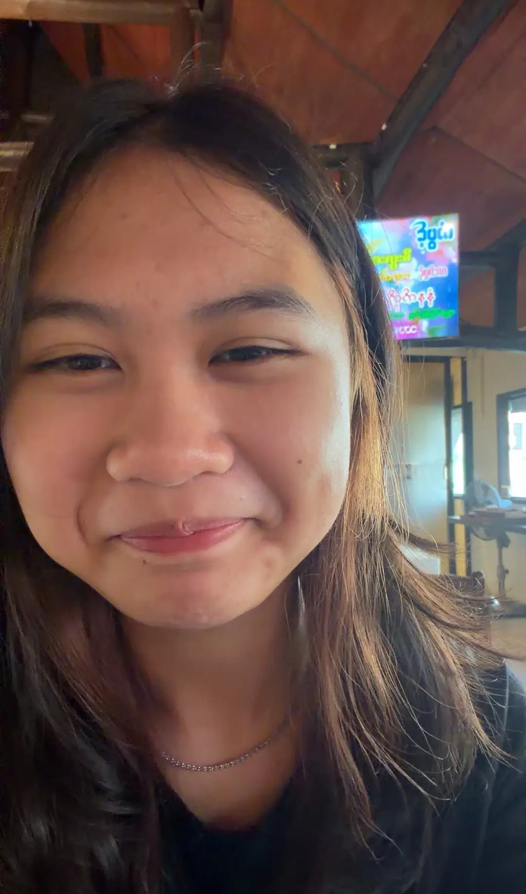
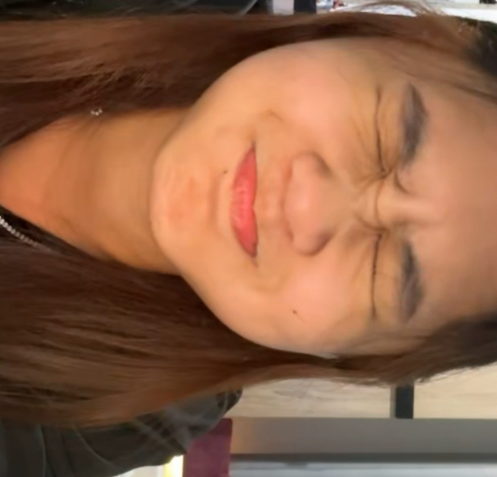
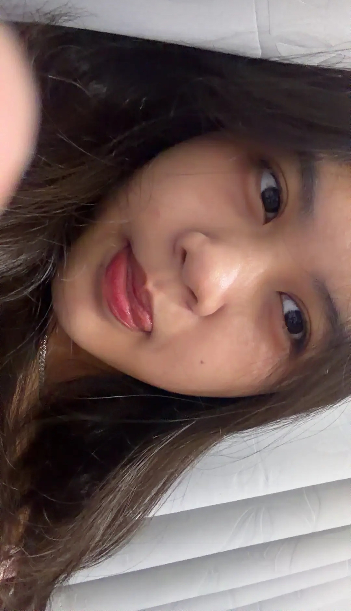

Happy One monthsary My Baby Pookie Wookie Cutie Patootie Zoeyy ❤️
Hiii babyyy, it's already been a month since we started dating, a milestone. I just want to say Iloveyousosooosomuchh and it will never change. In fact, I am loving you more and more as days pass by. I am really grateful to have you in my life, my babyy. Whenever I'm feeling stressed and whenever I'm at my lowest, you are always there for me. Even when there are days when I'm just upset, talking to you, speaking to you and you reassuring me just makes my day better and makes me happier. Just like how you are always there for me, I also wanna be there for you whenever you need me. I know sometimes I can say things that I don't mean to say (like speeding on bikes to near death experience) but I really don't mean it, I just say them sometimes because I just feel really upset or stressed about something. But just like I said, whenever I talk to you, my day just gets better and better to the point that the stress and sadness disappears before I know it. I also want you to know that starting from the day we started talking, I really really felt super comfortable with you and super safe with you. I could talk to you about anything and never get bored :>>>. And everytime we hangout, even a single minute of spending time with you means alot to me and I like to spend every nano-seconds with you. I just wanna be with you physically, if not virtually close all the time. And I also just want to remind you that I will never ever take advantage of you, your feelings, and I will never ever use you for your body. I love you purely from my heart and it will never ever change because I love you for who you are and I love you because you are YOU. You are my first thought when I wake up and last thought before I sleep. (No second thoughts about other girls). I also promise to keep you happy and safe my whole life. I promise to never do things that would upset you or make you uncomfortable, even behind your back babyy. If there are any things that I'm doing that are making you upset or uncomfortable, please always let me know because I am willing to change myself for you because I don' t ever wanna lose you babyy. If you ever overthink or feel upset or uncomfortable about something please always come to me and tell me openly because I am always here to reassure you and make you feel better, because I would reassure you a thousand times then letting you drown in your own thoughts. I don’t even know if I say this enough but I am really thankful and happy to have you in my life and I’m so proud to call you mine. I also love learning new things about you and whatever we do, it just brings us closer and closer and closer. And babyyy, just a reminder that you don’t always have to be strong around me, just like I said if you ever have a bad day, overthinking or need someone to open up or talk to, I am always here and I will NEVER EVER judge you for your feelings because all feelings are valid and I am always here to make you feel better. I know it has only been one month but I’m soooo excited about all the memories we haven’t made yet, all the jokes we haven’t told yet, all the pictures we haven’t taken yet, all the conversations we haven’t had yet, and all the memories we haven’t created yet. I am really excited to experience all that with you and only you and I can’t wait to do all of them with youuu. I am really happy that this is only the beginning and we still have a longggg wayy to go.
So happy one monthsary my babyyy wifey, thank you so much for coming into my life and making me a happier person than ever. Thank you for listening to me, reassuring me, making me laugh, putting up with my stupidness and most importantly, just being yourself!!I hope you know how special you are to me and I hope I can make you feel loved, appreciated and cared as much as you make me feel everyday. This is only our first month, and I already have so many memories with you that I want to keep forever. I can't wait to see where life takes us and all the memories we're going to make together.
And remember the bouquette I gave you? I will love you until the last flower die :>>
HAPPY ONE MONTH BABYY BOO ILOVEYOUSOOMUCHHHH, ILOVEYOUANDONLYYOUUUU🫶🫶🫶
I love you ❤️
— Henry